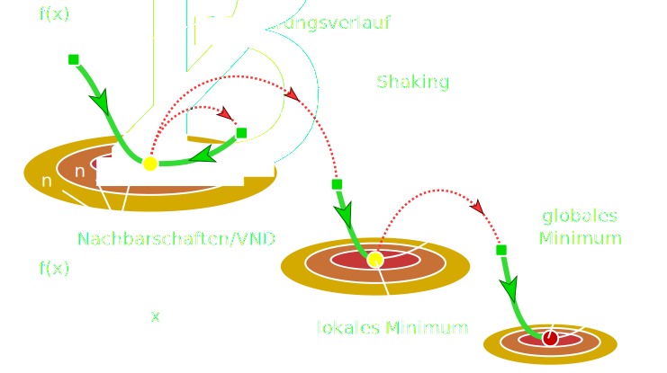

Variable Neighborhood Search
for the
Partition Graph Coloring Problem
Lorenz Leutgeb and Moritz Wanzenböck
Area of application
Design and optimization of fibre optical networks
Benefits of improved network structure
- Expandable
- Cheaper
- Lower energy consumption
Problem
Assigning wavelengths in fibre optical networks
Scientific Background
- Li, Simha: The Partition Coloring Problem and its Application to Wavelength
- Noronha, Ribeiro: Routing and wavelength assignment by partition colouring
How it works
- Computation of an initial solution using onestepCD
- Variable Neighborhood Search
- Variable Neighborhood Descent
- Local Optimization
- Shaking
Neighborhoods
ChangeColor
- Fast & easy
- Recolor node with maximum color
- Try to find a new solution
ChangeNode
- Similar to ChangeColor
- Swap nodes with maximum color
- Try to find a new solution
DSATUR
- Greedy
- Maximum Saturation
- Maximum number of uncolored adjacencies
ChangeAll
- Combination of ChangeNode & ChangeColor
- Swap node and color
- Expensive, but yields good results
Software used

UBIGRAPH
What did we achieve?
≈ 20%
- Better results
- Standardized instances
20